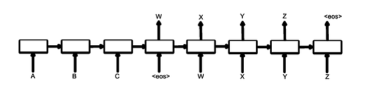
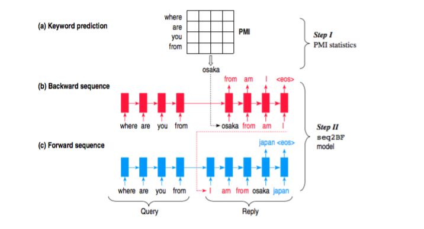
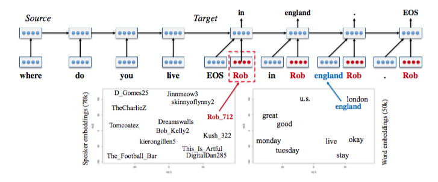
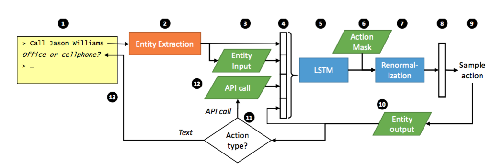
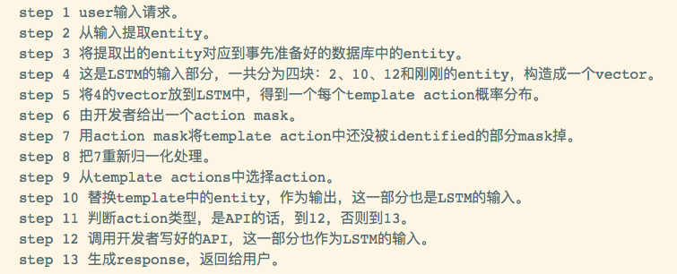
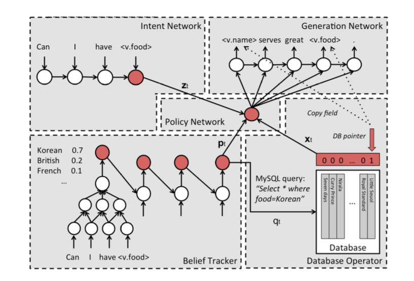
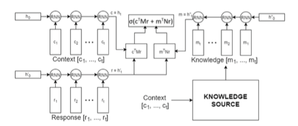
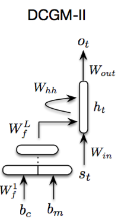

也说bot
引
chatbot是最近一段时间非常火的一个词或者一个应用，不仅仅各大新闻媒体在热炒bot的概念，各大巨头也投入巨大的资源进行研发，arxiv上刷出bot相关的paper也更是家常便饭。炒作归炒作，PR归PR，不得不说一个尴尬的事实是市面上确实难以找到一个真正好用的bot。bot按照涉及的领域，分为开放域(open-domain)和面向具体任务(task-oriented)的bot。开放域要做的事情很大，更像是一个什么都能搞的平台，不管你提什么样的需求，它都能够解决，有点true AI的意思，而面向任务的bot则专注做好一件事情，订机票，订餐，办护照等等。
说到开放域bot，大家接触最多的也就是一些回答非常无厘头的娱乐用bot，比如很多年前活跃在各大社交网站上的小黄鸡，现在市面上活跃着很多号称掌握了bot技术，在用深度学习解决bot技术的bot公司，都是这种，解决不了什么实际问题，就是能和大家聊上两句，而且很多时候回答都是牛头不对马嘴的，十分可笑。
再说task-oriented bot，市面上最多的就是客服机器人，银行也好，电商也罢，不想重复性地回答用户的问题，就用一个客服机器人来应对，且不说效果如何，开发一个具体task的bot需要费不少工夫，而且后期还要大量的维护，因为太多的hand crafted features被用到，整个bot的框架横向扩展性相对来说较差，换一个场景基本上就需要重新开发一套，人力成本太高了。
bot的理想非常丰满，大公司描绘的场景也确实很美，但现实的bot却狠狠地浇了一盆冷水下来。期望越高，失望越大。如果媒体一味地吹捧bot，仿佛整个世界明天就会是bot的了，对bot的发展并无益处，捧杀只会带来气泡，破裂之后，一切如初。
功能强大的、开放域的bot在短期内是比较难实现的，但是如果降低期望，将bot不应当做是一种技术层面的革命，而应当做交互层面的革新才是理性的态度，bot作为一种入口，可能大家都不再需要一个随身携带的终端，只需要找到一个可以识别身份，可以联网的硬件，比如一面镜子，就可以执行很多的task，订机票、买东西等等等等。bot这个时候起到的是一个操作的入口和背后执行各种不同task的黑箱，我们不需要看到整个执行过程，也不需要知道原理是什么，通过一些简单的语言交互，就能完成一些复杂的task，终端要做的事情就是反馈结果和接收输入，执行的过程都在云端，各种bot云。
而这一切的关键是解决好task-oriented bot，用更多data driven的解决方案来代替传统的人工features和templates。
问题描述
bot是一个综合性的问题，涉及到下面三个主要问题：
1、response generation(selection)
对话生成是最后一个步骤，是输出的部分。简单总结下，有四种solutions：
solution 1 直接根据context来生成对话，这方面最近的paper非常地多，尤其是seq2seq+attention框架席卷了NLP的很多任务之后，对话生成的benchmark也一次又一次地被各种model刷新着。对话生成的问题，被定义为基于某个条件下的生成模型，典型的根据context来predict words，涉及到句子生成的问题，评价问题就会是一个比较难的问题。
solution 2 当然有的paper并不是将对话生成定义为语言模型问题，而是一个next utterance selection的问题，一个多选一的问题，给定一个context，给定一个utterance candidate list，从list中选择一个作为response，当然这类问题的难度会小很多，评价起来也非常容易，但是数据集准备起来要多花一些功夫，而且在实际应用中不好被借鉴。
solution 3 rule-based或者说template-based，response的最终形式其实是填充了一个模板而成的，大多数的东西是给定的，只有一些具体的value需要来填充。这一类解决方案很适合做task-oriented bot，但过多的人工features和templates导致了其难以移植到其他task上。
solution 4 query-based或者说example-based，response是来自于一个叫做知识库的数据库，里面包含了大量的、丰富的example，根据用户的query，找到最接近的example，将对应的response返回出来作为输出。这一类解决方案非常适合做娱乐、搞笑用的bot，核心技术在于找更多的数据来丰富知识库，来清洗知识库。但毕竟respnose是从别人那里拿出来的，可能会很搞笑，但大多数会牛头不对马嘴。
2、dialog state tracking(DST)
有的paper称DST为belief trackers，这个部件其实是bot的核心，它的作用在于理解或者捕捉user intention或者goal，只有当你真的知道用户需要什么，你才能做出正确的action或者response。关于这个部分，会有Dialog State Tracking Challenge比赛。一般来说都会给定一个state的范围，通过context来predict用户属于哪个state，有什么样的需求，是需要查询天气还是要查询火车票。
3、user modeling
bot面向具体的业务，都是和真实的user来打交道的，如果只是简单的FAQ bot，回答几个常见的问题可能不需要这块，但如果是其他更加复杂、细致的业务，都需要给用户建模，相同的问题，bot给每个人的response一定是不同的，这个道理非常简单。user modeling，需要涉及的不仅仅是简单的用户基本信息和用户的一些显式反馈信息，而更重要的是用户的history conversations，这些隐式的反馈信息。就像是推荐系统火起来之前，大家都是中规中矩地卖东西，但是有一些聪明人开始分析用户的行为，不仅是那些点赞行为，更多的是那些用户不经意间留下的“蛛丝马迹”，从而知道了用户对哪些东西潜在地感兴趣，也就是后来推荐系统在做的事情。对user进行建模，就是做一个个性化的bot，生成的每一个response都有这个user鲜明的特点。
语料
大型的语料都是用来训练开放域bot对话生成模型的，数据源一般都是来自社交网站。而对于task-oriented bot来说，客户的数据一般规模都非常地小，这也正是难以将data driven的方案直接套用到task-oriented bot上的一个主要原因。
[1]中给出了bot训练语料的survey，感兴趣的同学可以读一下这篇survey。

图来自文章[13]，英文的语料确实比较多，Sina Weibo那个语料是华为诺亚方舟实验室release的[12]。从twitter或者微博上产生bot数据的话，“conversational in nature”效果不如从ubuntu chat logs这种聊天室产生的数据更加适合训练response生成模型，因为更加天然无公害。文章[5]也用了一个大型中文语料，数据来自百度贴吧。
模型
研究bot的paper是在太多了，这是一个非常活跃的研究领域，细分的方向也非常的多，接下来按照所针对的研究问题来分别介绍一些模型。
seq2seq生成模型
现在最流行的解决方案是seq2seq+attention，encoder将user query feed进来，输出一个vector representation来表示整个query，然后作为decoder的condition，而decoder本质上就是一个语言模型，一步一步地生成response，[2]采用就是这种方案，google用了海量的参数训练出这么一个模型，得到了一个不错的bot。

而典型的seq2seq存在一个问题，就是说容易生成一些“呵呵”的response，即一些非常safe，grammatical但没有实际意义的response，比如”I don’t know!”之类的。原因在于传统的seq2seq在decoding过程中都是以MLE(Maximum Likelihood Estimate)为目标函数，即生成最grammatical的话，而不是最有用的话，这些safe句子大量地出现在训练语料中，模型学习了之后，无可避免地总是生成这样的response，而文章[3]借鉴了语音识别的一些经验，在decoding的时候用MMI（Maximum Mutual Information）作为目标函数，提高了response的diversity。
文章[4]认为类似于RNNLM这样的语言模型在生成人话质量不高的根本原因在于，没有处理好隐藏在utterance中的随机feature或者说noise，从而在生成next token（short term goal）和future tokens（long term goal）效果一般。

在生成每一个utterance时，需要用到四个部分，encoder RNN、context RNN、latent variable、decoder RNN，按顺序依次输入和输出。这里的latent variable和IR中的LSI有一点异曲同工，latent表明我们说不清他们到底具体是什么，但可能是代表一种topic或者sentiment，是一种降维的表示。
文章[5]提出了一种叫做content introducing的方法来生成短文本response。

step 1 给定query之后，预测一个keyword作为response的topic，这个topic词性是名词，这里的keyword并不能捕捉复杂的语义和语法，而只是根据query的每个词来预估出一个PMI（Pointwise Mutual Information）最高的名词作为keyword.
step 2 [5]的模型叫做Sequence To Backward and Forward Sequences，首先进行backward step，给定一个query，用encoder表示出来得到一个context，decoder的部分首先给定keyword作为第一个词，然后进行decoding，生成的这部分相当于keyword词前面的部分；接下来进行的是forward step，也是一个典型的seq2seq，用encoder将query表示成context，然后给定backward生成的话和keyword作为decoder的前半部分，继续decoding生成后半部分。整个的流程这样简单描述下：
step 1 query + keyword => backward sequence
step 2 query + keyword + backward sequence(reverse) => forward sequence
step 3 response = backward (reverse) sequence + keyword + forward sequence
user modeling模型
文章[6]针对的问题是多轮对话中response不一致的问题，将user identity（比如背景信息、用户画像，年龄等信息）考虑到model中，构建出一个个性化的seq2seq模型，为不同的user，以及同一个user对不同的请将中生成不同风格的response。

[6]的模型叫Speaker Model，是一个典型的seq2seq模型，不同的地方在于在decoding部分增加了一个speaker embedding，类似于word embedding，只是说这里对用户进行建模。因为无法对用户的信息显式地进行建模，所以用了一种embedding的方法，通过训练来得到speaker向量，下面左边的图是speaker向量在二维平面上的表示，具有相似背景信息的user就会很接近，与word向量一个道理。
reinforcement learning模型
用增强学习来解决人机对话问题具有很悠久的历史，只不过随着AlphaGo的炒作，deepmind公司将增强学习重新带回了舞台上面，结合着深度学习来解决一些更难的问题。
增强学习用long term reward作为目标函数，会使得模型通过训练之后可以predict出质量更高的response，文章[7]提出了一个模型框架，具有下面的能力：
1、整合开发者自定义的reward函数，来达到目标。
2、生成一个response之后，可以定量地描述这个response对后续阶段的影响。

两个bot在对话，初始的时候给定一个input message，然后bot1根据input生成5个候选response，依次往下进行，因为每一个input都会产生5个response，随着turn的增加，response会指数增长，这里在每轮对话中，通过sample来选择出5个作为本轮的response。
在一个大型数据集上训练一个效果不错的seq2seq作为初始值，用增强学习来提升模型实现自定义reward函数的能力，以达到期待的效果。
文章[7]的模型可以生成更多轮数的对话，而不至于过早地陷入死循环中，而且生成的对话diversity非常好。
task-oriented seq2seq模型
现有的task-oriented bot多是采用rule-based、template-based或者example-based或者是综合起来用，用data driven的解决方案十分稀有。文章[8]和[9]就是尝试在bot的个别部件上采用深度学习的技术来做，并且给出了切实可行的方案。
文章[8]先是从一个大家熟知的场景开始介绍，一个经验丰富的客服是如何带一个新入职的客服，分为四个阶段：
1、告诉新客服哪些”controls”是可用的，比如：如何查找客户的信息，如何确定客户身份等等。
2、新客服从老客服做出的good examples中模仿学习。
3、新客服开始试着服务客户，老客服及时纠正他的错误。
4、老客服放手不管，新客服独自服务客户，不断学习，不断积累经验。
[8]的模型框架就是依照上面的过程进行设计的：
1、开发者提供一系列备选的actions，包括response模板和一些API函数，用来被bot调用。
2、由专家提供一系列example dialogues，用RNN来学习。
3、用一个模拟user随机产生query，bot进行response，专家进行纠正。
4、bot上线服务，与真实客户进行对话，通过反馈来提高bot服务质量。

一个完整的工作流程由上图描述，具体步骤看下图：

训练的时候是用一部分高质量的数据进行监督学习SL，用增强学习RL来优化模型，得到质量更高的结果。
文章[9]平衡了两种流行方案的优缺点，提出了一套有参考价值的、具有实际意义的seq2seq解决方案。

一共五个组件：
1、 Intent Network
这个部分可以理解为seq2seq的encoder部分，将用户的输入encode成一个vector。
2、 Belief Trackers
又被称为Dialogue State Tracking(DST)，是task-oriented bot的核心部件。本文的Belief Trackers具有以下的作用：
- 支持各种形式的自然语言被映射成一个有限slot-value对集合中的元素，用于在数据库中进行query。
- 追踪bot的state，避免去学习那些没有信息量的数据。
- 使用了一种weight tying strategy，可以极大地减少训练数据的需求。
- 易扩展新的组件。
3、 Database Operator
数据库查询的输入来自于Belief Trackers的输出，即各种slot的概率分布，取最大的那个作为DB的输入，进行查询，获取到相应的值。
4、 Policy Network
这个组件是像一个胶水，起到粘合其他上面三个组件的作用。输入是上面三个组件的输出，输出是一个向量。
5、 Generation Network
最后一个组件是生成模型，本质上是一个语言模型，输入是Policy Network的输出，输出是生成的response，再经过一些处理之后可以返回给用户了。这里的处理主要是将response中的slot，比如s.food还原成真实的值。这一步和文章[8]的step 10一样，将具体的值还原到entity上。
完全用end-to-end来解决task-oriented是不可能的事情，一定是在一个框架或者体系内用这种seq2seq的解决方案来做这件事情，文章[8]和[9]给出了很大的启发。
Knowledge Sources based模型
纯粹的seq2seq可以解决很多问题，但如果针对具体的任务，在seq2seq的基础上增加一个相关的knowledge sources会让效果好很多。这里的knowledge可以是非结构化的文本源，比如文章[10]中的ubuntu manpages，也可以是结构化的业务数据，比如文章[9]中的database，也可以是一个从源数据和业务数据中提取出的knowledge graph。
文章[10]作者将bot任务定义为next utterance classification，有一点像question answering任务，给定一个context和一个response candidate list作为备选答案，通过context来从candidate list中选择正确的response。本文的贡献在于在context的基础上，引入了task相关的外部专业知识库，并且这个知识库是非结构化的。

模型是三个rnn encoder组成，一个rnn来encode context，一个rnn来encode response，还有一个rnn来encode knowledge，然后综合起来做预测，选出最合适的response。模型被称作knowledge encoder。因为数据集采用的是ubuntu technical support相关的数据集，外部资源就选用了ubuntu manpages。
context sensitive模型
文章[11]的模型比较简单，但考虑的问题意义很大，history information的建模对于bot在解决实际工程应用的帮助很大，也直接决定了你的bot是否能够work。作者将history context用词袋模型表示，而不是我们经常采用的rnn，然后将context和用户query经过一个简单的FNN，得到一个输出。

评价
bot response评价很难，虽然说可以借鉴机器翻译的自动评价方法BLEU来做，但效果不会太好。几乎每篇paper都是会花钱雇人来做人工评价，设计一套评价机制来打分，人工的评价更具有说服力。对于实际工程应用更是如此，用户说好才是真的好。而不是简单地拿着自己提的、有偏的指标，和几个方法或者其他公司的bot进行对比，来说明自己好。
思考
读了一些paper，也和一线在做bot应用的工程师交流之后，有了一点思考，总结如下：
1、要不要做bot？流行一种说法是市面上没有好用的bot，要解决bot的问题需要很多技术同时进步，可能还需要非常长的一段时间，现在用这个东西来做business，简直荒谬。我个人的看法是，解决具体task的bot，结合当前先进的技术，做一些框架性的工具，并不是那么遥远的事情，虽然不容易，但却非常有意义，解决了垂直领域的bot问题，才有可能解决open domain的bot问题。也正是因为不容易，提高了门槛，才会出现真正的机会，诞生一些很牛的技术公司。
2、open domain还是task-oriented？如果是我，我会选后者，因为前者只是一个梦想，一个遥不可及的梦想，需要更多的技术层面上的大突破。task-oriented更加具体，更加实用，针对具体的业务，提供一些解决方案，已经有很多企业在做了，虽然一个通用性或者扩展性强的解决方案还没有出现，但一定是一个趋势，也是新一代做bot的公司的机会。
3、task-oriented bot为什么难，该朝哪个方向来发力？end-to-end是一种理想化的模型，用深度学习模型从大量训练数据中来“捕捉”一些features，“拟合”一些函数，虽然可以得到很不错的效果，而且使用起来确实很方便，但尴尬就尴尬在具体的task中是拿不到海量数据的，数据规模小了之后，纯粹的end-to-end就变得非常鸡肋了。然而真实的场景中，很多企业又有一定的数据，也有bot的需求，所以现在成熟的解决方案就是针对你的具体业务，来设计一些features，templates和rules，当客户的业务发生更改时，需要不断地维护现有的bot系统，十分费时费力。真实的场景中往往涉及到很多结构化的业务数据，纯粹地、暴力地直接根据context生成response是不可能做到的，文章[8][9]都给出了非常有启发性的解决方案，将end-to-end应用在局部，而非整体上，配合上Information Extraction和Knowledge Graph等技术，实现一个高可用的框架体系，这个应该是task-oriented bot的发展方向。
4、response的生成应该与哪些因素有关呢？response质量的好坏，需要联系到这几个features：（1）user query，用户的提问，用户在这轮对话中到底在问什么，准确地理解用户的意图，这是至关重要的。（2）user modeling，对用户进行建模，包括用户的基本信息，还有更重要的是用户history conversation logs的mining，这个工作很难，但同时也很见水平，也是一家技术公司证明自己技术牛逼的一种途径。logs的挖掘现在很常见，不见得大家都做的很好，而这里的logs不是一般的设定好的、结构化的指标，而是非结构化的文本logs，挖掘起来难度更大。另外一点，也是paper种看到的，user emotion，情感分析是nlp中研究比较多的task，用户的情绪直接关系到销售的成败，如果技术足够牛，可以考虑的因素就可以足够多，对user的分析也就足够清晰。将history生挂在模型中不是一个好办法，因为history是不断增长，会导致模型在捕捉信息时出现问题，更好的办法可能是build user profile之类的东西，将history沉淀出来，作为一个vector representation，或者一种knowledge graph来表征一个user。有了这种能力的bot，说的冠冕堂皇一点就是个性化的bot。（3）knowledge，外部知识源，涉及到具体业务的时候，业务数据也是一种knowledge，如何将knowledge建模到模型中，在生成对话的时候可以更加专业和准确也是一个非常重要的问题。bot是一个综合性的难题，不仅仅是系统框架上的难，而且是建模上的难。
5、我一直觉得做人和看问题都不可以极端，世界并非非黑即白，而是介于两者之间的连续值。不可能说要么做成一个open-domain巨无霸的bot，要么就是一个什么具体功能都没有的bot，不能只看到现有的bot不成熟，以及幻想中的bot遥不可及，就开始黑这个领域，还嘲笑人家能够居然拿到投资。争吵这些毫无意义，真正有意义的是深挖这个领域，找到痛点和难点，逐个击破，不断地推进这个领域的发展，而不是像一些街边看热闹的人一样，简直无趣！在很多领域突破之前，仿佛都看不到曙光，但几年之后很多当时难以解决的问题不都是红海一片，满大街都是了么？做一个通用的bot可能很长一段时间内都是一件比较困难的事情，但做一个高可用、扩展性不错的bot解决方案还是有盼头的，不必过度自信，也不必妄自菲薄，踏踏实实地做就是了。
参考文献
[1] A Survey of Available Corpora for Building Data-Driven Dialogue Systems
[2] A Neural Conversational Model
[3] A Diversity-Promoting Objective Function for Neural Conversation Models
[4] A Hierarchical Latent Variable Encoder-Decoder Model for Generating Dialogues
[6] A Persona-Based Neural Conversation Model
[7] Deep Reinforcement Learning for Dialogue Generation
[8] End-to-end LSTM-based dialog control optimized with supervised and reinforcement learning
[9] A Network-based End-to-End Trainable Task-oriented Dialogue System
[10] Incorporating Unstructured Textual Knowledge Sources into Neural Dialogue Systems
[11] A Neural Network Approach to Context-Sensitive Generation of Conversational Responses
[12] A Dataset for Research on Short-Text Conversation
[13] The Ubuntu Dialogue Corpus: A Large Dataset for Research in Unstructured Multi-Turn Dialogue Systems
研究组和研究人员
bot是一个非常活跃的研究领域，全世界有很多的人都在做相关的研究。下面列的是最近所读paper的作者或者所在的group：
[1] Cambridge Dialogue Systems Group
[3] Jiwei Li
[4] Ryan Lowe